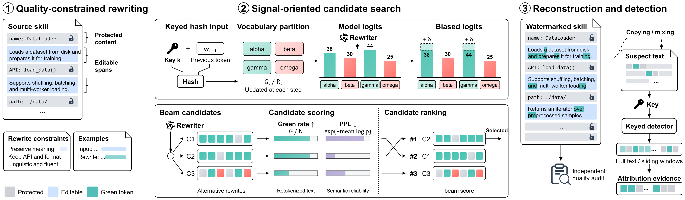
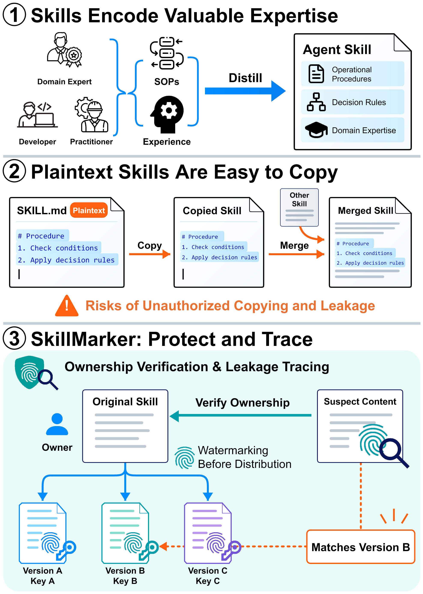

AGENT SKILLS · TEXT WATERMARKING
Expertise, shared.
Origins, traceable.
SkillMarker embeds keyed watermarks into agent skills, supporting ownership verification and leakage tracing while preserving essential instructions.
Try the examples instantly. No sign-in or GPU required.
01 / EXPLORE THE WATERMARK
Small changes.
A measurable signal.
Compare two complete skills before and after watermarking. Inspect the wording and the recorded detection results.
Loading saved examples…
Original skill
BEFOREWatermarked skill
AFTERHighlights show changed wording, not green-list token assignments.
SAVED FULL-DOCUMENT SCORES
Inspect the signal.
These scores cover the complete saved skill, even when a single passage is displayed above.
| Metric | Original | Watermarked |
|---|
How to interpret these examples
These are curated, precomputed demonstrations generated with Qwen3-8B. The text was reviewed and editorially corrected before final scoring. They are not an unbiased benchmark; Skill execution was not tested. Nominal p-values are not calibrated production false-positive rates, and detection alone does not establish semantic quality or prove ownership.
The downloaded evidence includes the settings, tokenizer fingerprint and SHA-256 hashes of both saved files. Demo material is available under Apache-2.0.
Precomputed and editorially reviewed examples. See the interpretation note above for scope and limitations.
Bring your own skill.
Upload a complete SKILL.md and explore embedding and detection in the live app.
02 / THE METHOD
Protect the instructions.
Mark the expression.
Quality-constrained rewriting and signal-oriented candidate search adapt KGW watermarking to structured agent skills.

Constrain the rewrite
Separate essential content from flexible prose. Keep protected literals and structure in place.
Search for signal
Explore alternative expressions under a keyed logit bias and compare eligible candidates.
Reconstruct & inspect
Assemble the skill, audit its quality, and test suspect text with full-text or sliding-window detection.
Why watermark agent skills?
Skills package reusable expertise in plaintext. That same portability makes their instructions easy to copy, redistribute, or merge into other skills.

03 / THE RESEARCH
SkillMarker: A KGW-Based Watermarking Method for Agent Skill Ownership Verification
Cite this work
@misc{tang2026skillmarker,
title = {SkillMarker: A KGW-Based Watermarking Method for Agent Skill Ownership Verification},
author = {Alan Tang and Lifeng Wang and Gang Wu and Tao Zhang and Yantao Jia and Xiaofeng Zhu},
year = {2026},
eprint = {2610.15725},
archivePrefix = {arXiv},
primaryClass = {cs.CR},
url = {https://arxiv.org/abs/2610.15725}
}